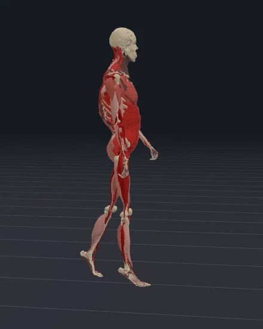
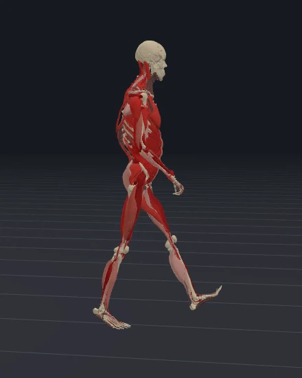
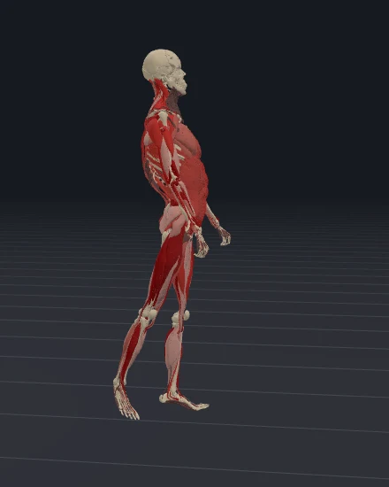
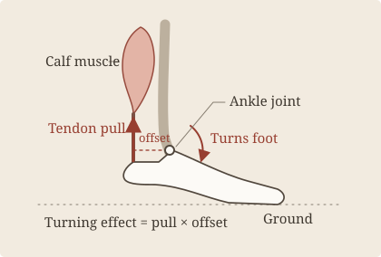
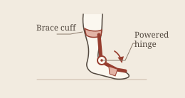
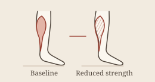
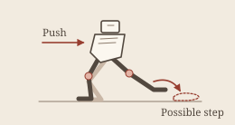

Selected projects Interactive demo
Learn to walk
A neural network controls 700 simulated muscles to make this model walk. Start the simulation, then try pushing the walker sideways.
Drag to rotate. Scroll or pinch to zoom.
Low to high activation
- Average speed
- —
- Walk time
- —
- Displacement
- —
MS-Human-700 · 700 muscle actuators · 50 controller updates per simulated second
Walking takes coordination
At the end of a step, the calf pulls on the heel through the Achilles tendon. The tendon runs behind the ankle, so the pull lifts the heel as the forefoot presses against the ground.

0.20 s
0.48 s
0.80 s

Muscle activation
The red shading shows activation, or how active a muscle is in the model. Each muscle takes time to respond to the network’s command, called excitation. The force it produces also depends on its length and how fast that length changes.
Turn off Activation to see the anatomy without the overlay. The colors show simulated activation, which is different from muscle force or the electrical activity recorded by EMG.
Hip muscles help steady the pelvis over the planted foot. Muscles at the front of the shin lift the toes as the other foot swings forward. Gait studies compare muscle activity with movement and ground forces.
Training the controller
The controller, or policy, is a neural network that sends new muscle commands every 20 milliseconds of simulated time.
The new body state goes back to the controller.
Reinforcement learning
- Set a target
We fitted a stride from Gait120 motion capture to the simulated body.
- Run walking trials
The network tried different muscle commands. It earned a higher reward for walking closer to the reference stride.
- Update the network
We used proximal policy optimization (PPO) to update the network based on the rewards it earned.
The network is already trained. When you push the walker, it can react to the change in balance without retraining.
Walking with and without a push
Both runs start from the same state and use the same controller. One gets a sideways push. Use Jump to push, then switch between runs to compare the same moment.
Measurements
- No push
- —
- Sideways push
- —
Distance to either side of the starting line. The shaded band marks the push.
This is one push at one point in the stride. To test recovery, repeat the trial and vary the direction, timing, and strength of the push.
Research applications
In the Learn to Move challenge, we tested whether controllers could make a simulated walker change speed, turn, and stop. We describe those experiments in our 2021 review of reinforcement learning for locomotion.
-

Assistive devices
Simulate a brace that helps at push-off. Check whether it takes work off the calf or shifts it to the knee and hip.
-

Rehabilitation research
Reduce calf strength in the model and see how its gait changes. That can help researchers decide what to measure in a study with people.
-

Legged robotics
Study where a robot should place its next foot after a push. The controller would need to be trained for the robot’s own body.
The demo uses one model on level ground. To check its predictions against real walking, researchers would need motion capture, ground forces, and recordings of muscle activity.
Tools, data, and references
-
Physics engine
MuJoCo
Simulates muscle forces, gravity, and ground contact.
-
Musculoskeletal model
MS-Human-700
The simulated body with 700 muscle actuators.
-
Training framework
MuscleMimic
The code we adapted to train the controller.
-
Motion capture
Gait120
Human walking recordings used to fit the reference stride.
-
Anatomy atlas
BodyParts3D
The bone and muscle meshes shown in the viewer.
-
Browser runtime
ONNX Runtime Web
Runs the trained neural network in your browser.
- Browser graphics
- Three.js
- Training
- JAX · PPO algorithm
- Arm model
- MoBL-ARMS
- Related research
- Song et al., 2021 · MS-Emulator